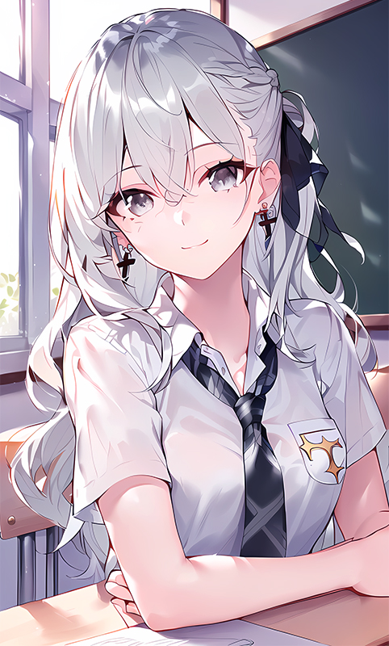
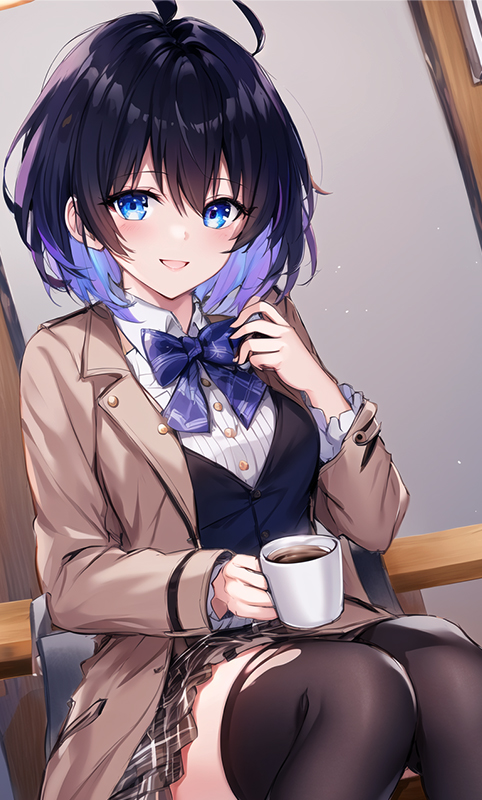
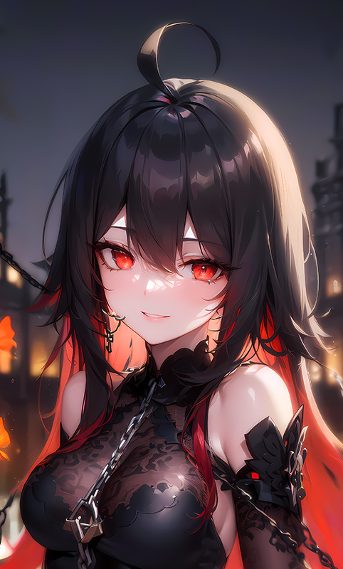

|
|
|  |
布洛妮娅 · 扎伊切克
由于过去的某个事件，布洛妮娅失去了双腿和感情回路
双腿依赖于外骨骼辅助可以行动,
但平时主要还是借助某人赠送的重装小兔的力量漂浮。
她很少表现出情绪，冰冷的外表几乎没有透露她内心的想法。
然而，她非常喜欢吼姆，乐于收集和展示各种吼姆商品。
Buluoniya zayiqieke
youyuguoqudemougeshijian buluoniyashiquleshuangtuiheganqinghuilu |
|  |
希儿 · 芙乐艾
希儿在懂事时便已经来到了可可利亚孤儿院，从未见过外面的世界，
因为自己年纪小而且性格温柔软弱所以一直被当成那个被照顾的角色，
直到布洛妮娅偷袭可可利亚失败被带到了孤儿院的那刻。
希儿起初对像狼一样锐利的布洛妮娅感到害怕，
但是在和布洛妮娅的相处中逐渐认识到布洛妮娅的温柔并将她当做自己的姐姐和希望。
希儿曾经教过布洛妮娅制作胡萝卜甜菜汤，布洛妮娅也曾和希儿约定好要骑摩托车带希儿去看海。
xier fuleai
buluoniyayecenghexieryuedinghaoyaoqimotuochedaixierqukanhai |
|  |
希儿 · 芙乐艾
里人格希儿是希儿胸前的圣痕诞生的圣痕人格，记录了上文明的知识和技术，
但如今的希儿并不能完全掌控。
里人格希儿在希儿的幼年时期曾以“影子”的形态出现，
后来在希儿被绑架后吸收了希儿的负面情绪后彻底觉醒。
xier fuleai
buluoniyayecenghexieryuedinghaoyaoqimotuochedaixierqukanhai |